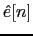
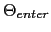
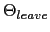

Next: Model-based Speech/Non-Speech Decoder Up: Energy-Based Speech/non-Speech Detector with Previous: Derivative Filtering Contents
After the energy is filtered for the third time one needs to impose some time constraints to avoid changing too quickly between speech and non-speech. A finite state machine (FSM) has been implemented for this purpose. In this FSM described in figure 4.3 the time constraints are forced through enter times and leave times according to the values of  using two thresholds (enter thrld,  and leave thrld, ) on each sample. The selection of the right thresholds is crucial to the correctness of the detector and, although the energies have been initially normalized, might differ from meeting to meeting. The threshold enter thrld is defined to be an order of magnitude bigger than leave thrld and its value is iteratively defined by the hybrid system described below. As for the appropriate minimum time of either speech or non-speech states it must be estimated using development data, but as it will be shown, it is more independent to meeting room variations than the threshold values.
Inside the FSM, the conditions to go from non-speech to speech are the same to go from speech to non speech. This way to go from speech to non-speech, has to be higher than the threshold to enter ( ), and vice versa:
where NSP is a non-speech state and SP is a speech state.
user 2008-12-08